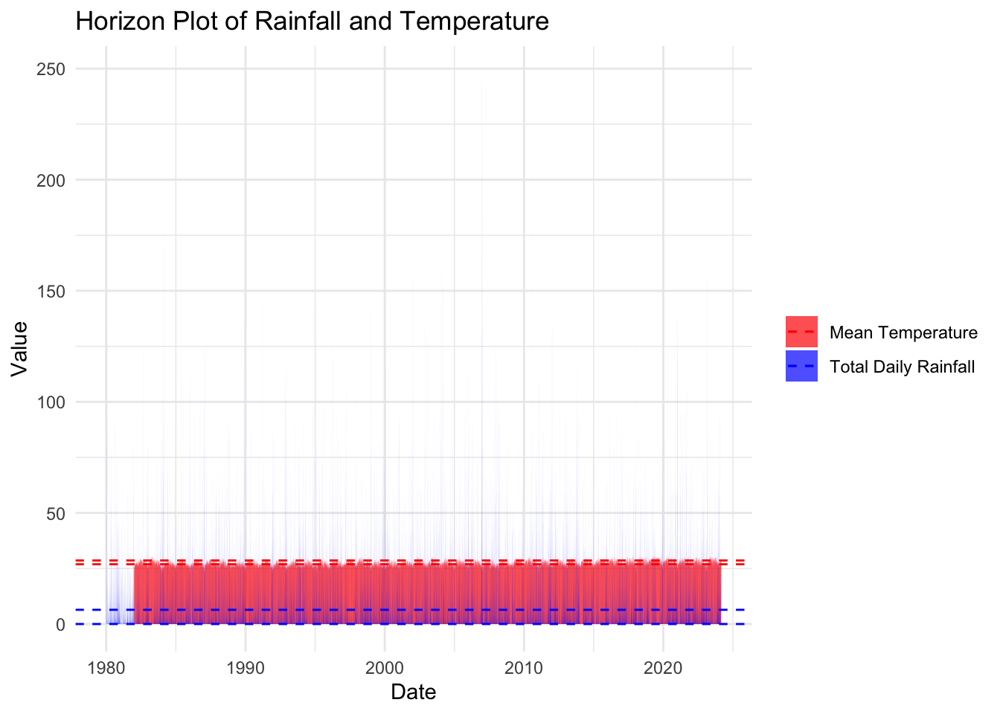

pacman::p_load(ggplot2, dplyr, ggiraph)
pacman::p_load(ggHoriPlot, ggthemes, tidyverse)Take Home Ex 4
Storyboard
Intro
Weather data is subjected to monsoon season in Singapore. Hence, it is important that we use appropriate visuals for analyzing seasonal data so that we can identify any patterns amidst the seasonal data. We want to allow the user to visualize such trends on a user-interface that allows user to toggle parameters to manipulate the dataset and visualisation parameters for the statistical analysis of trends. In this article we will propose a dashboard for the seasonal view of the weather trends. This would form the second view of our three-panel shiny application.
Tools
We are using ShinyUI, so we have to install it first:
Storyboard
The panel is split into (i) data filter left menu and (ii) main chart area on the right. in (i), user can choose the kind of data (rainfall or temperature), and the start and end period to be analyzed. There will be two charts in (ii), first one showing a cycle plot of historical data over the years for each month, and the second plot showing the distribution of historical data of each month across time. The latter plot will have twelve facets, one for each month. The x-axis will be the mean temperature/rainfall, while the y-axis will be the year.
Below shows a sample layout of the application:
Install Required Libraries
Data Preparation
#define a function to read the csv files and convert the correct data
read_the_csv <- function (csv_files) {
data <- read_csv(csv_files,
col_types="ciiiddddddddd", na = c("\x97","-","NA","")
) %>%
#filter away where year is null (these are empty records and can be ignored)
filter(!is.na(`Year`)) #%>%
problems(data)
return (data)
}# Initialize an empty list to store data frames
data_list <- list()
# Define the batch size
batch_size <- 10000 # Adjust as needed
#read the station_list.txt
stn_file_conn <- file("data/station_list.txt","r")
# Read files in batches for each station
while (length(stn <- readLines(stn_file_conn, n = 1, warn = FALSE)) > 0){
#read station by station so we know which station had problematic data (if any)
p = paste0("DAILYDATA_S",stn,"_.*\\.csv$")
csv_files = list.files(path = "data", pattern = p, full.names = TRUE)
print(paste("processing ",stn))
#read files in batches for each station
for (i in seq(1, length(csv_files), by = batch_size)) {
batch_files <- csv_files[i:min(i + batch_size - 1, length(csv_files))]
batch_data <- map(batch_files, read_the_csv)
data_list <- c(data_list, batch_data)
}
print(paste("processed ",stn))
}
# Combine the data frames
combined_data <- bind_rows(data_list)
# We also write the combined data to a CSV file so it is easier to read subsequently
write_csv(combined_data, "combined_data.csv")#Read the data from combined csv
weather_data <- read_the_csv("combined_data.csv") %>%
rename(
"Total Daily Rainfall" = "Daily Rainfall Total (mm)",
"Highest 60 Min Rainfall" = "Highest 60 min Rainfall (mm)",
"Mean Temperature"="Mean Temperature (degC)",
"Minimum Temperature" = "Minimum Temperature (degC)",
"Maximum Temperature" = "Maximum Temperature (degC)",
"Highest 30 Min Rainfall" = "Highest 30 min Rainfall (mm)",
"Highest 120 Min Rainfall" = "Highest 120 min Rainfall (mm)"
) %>%
#append the Date field
mutate(`Date` = lubridate::ymd(paste(`Year`,`Month`,`Day`,sep = "-"))) %>%
mutate(`Month` = factor(month(`Month`),
levels=1:12,
labels=month.abb,
ordered = TRUE)) %>%
mutate(`Year` = lubridate::year(`Date`))
problems(weather_data)
weather_data# A tibble: 577,295 × 14
Station Year Month Day `Total Daily Rainfall` `Highest 30 Min Rainfall`
<chr> <dbl> <ord> <int> <dbl> <dbl>
1 Paya Lebar 1980 Jan 1 0 NA
2 Paya Lebar 1980 Jan 2 0 NA
3 Paya Lebar 1980 Jan 3 0 NA
4 Paya Lebar 1980 Jan 4 0 NA
5 Paya Lebar 1980 Jan 5 12.8 NA
6 Paya Lebar 1980 Jan 6 25.5 NA
7 Paya Lebar 1980 Jan 7 9.1 NA
8 Paya Lebar 1980 Jan 8 0 NA
9 Paya Lebar 1980 Jan 9 0 NA
10 Paya Lebar 1980 Jan 10 0 NA
# ℹ 577,285 more rows
# ℹ 8 more variables: `Highest 60 Min Rainfall` <dbl>,
# `Highest 120 Min Rainfall` <dbl>, `Mean Temperature` <dbl>,
# `Maximum Temperature` <dbl>, `Minimum Temperature` <dbl>,
# `Mean Wind Speed (km/h)` <dbl>, `Max Wind Speed (km/h)` <dbl>, Date <date>colnames(weather_data) [1] "Station" "Year"
[3] "Month" "Day"
[5] "Total Daily Rainfall" "Highest 30 Min Rainfall"
[7] "Highest 60 Min Rainfall" "Highest 120 Min Rainfall"
[9] "Mean Temperature" "Maximum Temperature"
[11] "Minimum Temperature" "Mean Wind Speed (km/h)"
[13] "Max Wind Speed (km/h)" "Date" Data visualisation
generate_cycle_plot <- function(data, start_date, end_date, selected_stations, show_mean_temp=TRUE, show_min_temp = TRUE, show_max_temp = TRUE) {
# Prepare data
tempdata <- data %>%
filter(between(`Date`, start_date, end_date)) %>%
filter(Station %in% selected_stations) %>%
group_by(`Month`, `Year`) %>%
summarise(
meanTemp = mean(`Mean Temperature`, na.rm = TRUE),
minTemp = min(`Minimum Temperature`, na.rm = TRUE),
maxTemp = max(`Maximum Temperature`, na.rm = TRUE)
)
tempdata
#}
#generate_cycle_plot(weather_data, ymd("2000-01-01"),ymd("2020-12-31"), c("Admiralty", "Changi"))
meanMonth <- tempdata %>%
group_by(`Month`) %>%
summarise(avg_mean = mean(meanTemp, na.rm = TRUE),
avg_min = mean(minTemp, na.rm = TRUE),
avg_max = mean(maxTemp, na.rm = TRUE))
# Get unique years
unique_years <- unique(tempdata$Year)
# Determine breaks and labels for the legend scale
if (length(unique_years) > 5) {
yearBreaks <- quantile(unique_years, probs = seq(0, 1, length.out = 5))
yearLabels <- round(yearBreaks)
} else {
yearBreaks <- unique_years
yearLabels <- round(yearBreaks)
}
# Plot using ggplot2
plot <- ggplot(data=tempdata, aes(x=`Year`, group=`Month`, color=`Year`))
temp_title = c()
if(show_mean_temp) {
plot <- plot + geom_hline(data = meanMonth,
aes(yintercept = avg_mean),
linetype=6, colour="red", size=0.5) +
geom_line(aes(y=meanTemp)) +
geom_text(data = filter(tempdata, Month == 12),
aes(y = meanTemp, label = "Mean Temp"),
hjust = -0.2, vjust = 0.5, color = "blue") +
geom_smooth(aes(y=meanTemp),method = "lm") + # Add a linear trend line with confidence interval
geom_line_interactive(
aes(y=meanTemp,
tooltip = paste(paste(`Month`,`Year`, sep=" "),
paste0('Mean Temperature:',round(`meanTemp`,1), "°C"),
paste0('Monthly Average:',meanMonth$avg_mean,"°C"),
sep="\n"),
data_id = `Year`
)
)
temp_title <- c(temp_title, "Mean")
}
if(show_min_temp) {
plot <- plot + geom_hline(data = meanMonth,
aes(yintercept = avg_min),
linetype=6, colour="red", size=0.5) +
geom_line(aes(y=minTemp)) +
geom_text(data = filter(tempdata, Month == 12),
aes(y = minTemp, label = "Min Temp"),
hjust = -0.2, vjust = 0.5, color = "blue") +
geom_smooth(aes(y=minTemp),method = "lm") + # Add a linear trend line with confidence interval
geom_line_interactive(
aes(y=minTemp,
tooltip = paste(paste(`Month`,`Year`, sep=" "),
paste0('Min Temperature:',round(`minTemp`,1), "°C"),
paste0('Monthly Average:',meanMonth$avg_min,"°C"),
sep="\n"),
data_id = `Year`
)
)
temp_title <- c(temp_title, "Min")
}
if(show_max_temp) {
plot <- plot + geom_hline(data = meanMonth,
aes(yintercept = avg_max),
linetype=6, colour="red", size=0.5) +
geom_line(aes(y=maxTemp)) +
geom_text(data = filter(tempdata, Month == 12),
aes(y = maxTemp, label = "Max Temp"),
hjust = -0.2, vjust = 0.5, color = "blue") +
geom_smooth(aes(y=maxTemp),method = "lm") + # Add a linear trend line with confidence interval
geom_line_interactive(
aes(y=maxTemp,
tooltip = paste(paste(`Month`,`Year`, sep=" "),
paste0('Max Temperature:',round(`maxTemp`,1), "°C"),
paste0('Monthly Average:',meanMonth$avg_max,"°C"),
sep="\n"),
data_id = `Year`
)
)
temp_title <- c(temp_title, "Max")
}
plot <- plot +
facet_grid(~ `Month`, switch = "x") +
labs(x = "Month",
y = "Mean Temperature (°C)",
title = paste("Cycle Plot Showing",paste(temp_title,collapse=", ")," Temperature in Singapore,\n",
day(start_date), " ",month(start_date,label = TRUE, abbr = TRUE),
" ",year(start_date),
" to ",
day(end_date), " ", month(end_date, label=TRUE, abbr=TRUE), " ", year(end_date))) +
theme_tufte(base_family="Helvetica") +
theme(axis.ticks.x = element_blank(),
axis.text.x = element_blank(),
axis.line.x = element_blank(),
plot.title = element_text(size = 12)
) +
scale_y_continuous(NULL,
breaks = NULL) +
scale_color_continuous(name="Year", breaks = yearBreaks, labels = yearLabels) #set x-axis breaks to unique year
girafe(
ggobj = plot,
width_svg = 6,
height_svg = 6*0.618,
options = list(
opts_hover(css = "fill: #202020;opacity:1; stroke-width:3"),
opts_hover_inv(css = "opacity:0.2;stroke-width:1")
)
)
} # end function generate_cycle_plot
generate_cycle_plot(weather_data, ymd("2000-01-01"),ymd("2020-12-31"), c("Admiralty", "Changi"))Horizon plot
generate_horizon_plot <- function(df, field) {
df %>%
filter(Date >= "2020-01-01") %>%
filter(!is.na(field)) %>%
ggplot() +
geom_horizon(aes(x = Date, y=`Mean Temperature`),
origin = "midpoint",
horizonscale = 6)+
facet_grid(`Station`~.) +
theme_few() +
scale_fill_hcl(palette = 'RdBu') +
theme(panel.spacing.y=unit(0, "lines"), strip.text.y = element_text(
size = 5, angle = 0, hjust = 0),
legend.position = 'none',
axis.text.y = element_blank(),
axis.text.x = element_text(size=7),
axis.title.y = element_blank(),
axis.title.x = element_blank(),
axis.ticks.y = element_blank(),
panel.border = element_blank()
) +
scale_x_date(expand=c(0,0), date_breaks = "3 year", date_labels = "%b%y") +
ggtitle('Average Temperature Selected Stations (Jan 2018 to Dec 2022)')
}
generate_horizon_plot(df=weather_data,"Mean Temperature")
weather_data# A tibble: 577,295 × 14
Station Year Month Day `Total Daily Rainfall` `Highest 30 Min Rainfall`
<chr> <dbl> <ord> <int> <dbl> <dbl>
1 Paya Lebar 1980 Jan 1 0 NA
2 Paya Lebar 1980 Jan 2 0 NA
3 Paya Lebar 1980 Jan 3 0 NA
4 Paya Lebar 1980 Jan 4 0 NA
5 Paya Lebar 1980 Jan 5 12.8 NA
6 Paya Lebar 1980 Jan 6 25.5 NA
7 Paya Lebar 1980 Jan 7 9.1 NA
8 Paya Lebar 1980 Jan 8 0 NA
9 Paya Lebar 1980 Jan 9 0 NA
10 Paya Lebar 1980 Jan 10 0 NA
# ℹ 577,285 more rows
# ℹ 8 more variables: `Highest 60 Min Rainfall` <dbl>,
# `Highest 120 Min Rainfall` <dbl>, `Mean Temperature` <dbl>,
# `Maximum Temperature` <dbl>, `Minimum Temperature` <dbl>,
# `Mean Wind Speed (km/h)` <dbl>, `Max Wind Speed (km/h)` <dbl>, Date <date>library(ggplot2)
library(dplyr)
library(tidyr)
df <- weather_data
# Reshape data from wide to long format
melted_df <- df %>%
pivot_longer(cols = c(`Total Daily Rainfall`, `Mean Temperature`), names_to = "variable", values_to = "value")
# Calculate quartiles for each variable
quartiles <- melted_df %>%
group_by(variable) %>%
summarise(Q1 = quantile(value, 0.25, na.rm = TRUE),
Q3 = quantile(value, 0.75, na.rm = TRUE))
# Create the horizon plot
horizon_plot <- ggplot(melted_df, aes(x = Date, y = value)) +
geom_area(aes(fill = variable), position = "identity", alpha = 0.7) +
geom_hline(data = quartiles, aes(yintercept = Q1, color = variable), linetype = "dashed", size = 0.5) +
geom_hline(data = quartiles, aes(yintercept = Q3, color = variable), linetype = "dashed", size = 0.5) +
scale_fill_manual(values = c("red", "blue")) +
scale_color_manual(values = c("red", "blue")) +
labs(x = "Date", y = "Value", fill = NULL, color = NULL, title = "Horizon Plot of Rainfall and Temperature") +
theme_minimal()
# Show the plot
print(horizon_plot)